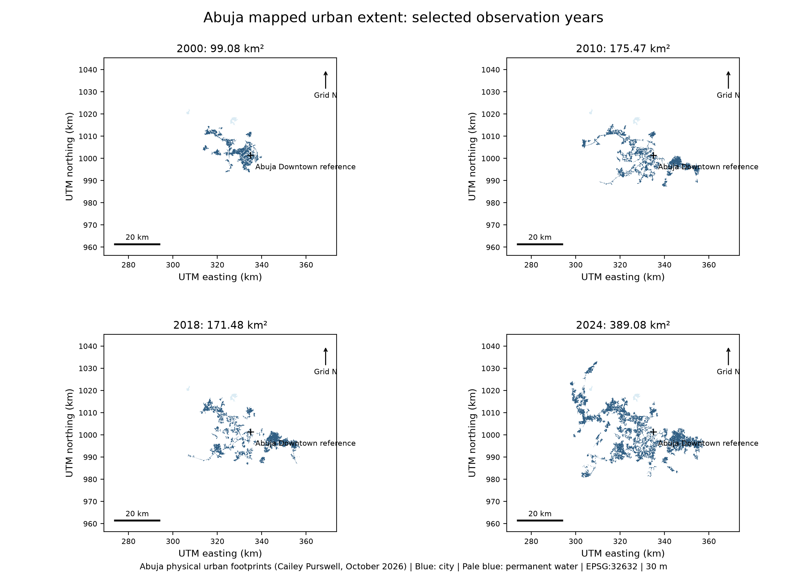
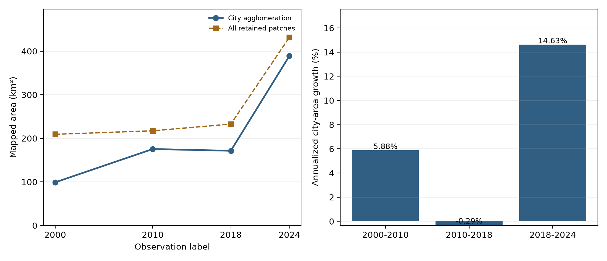
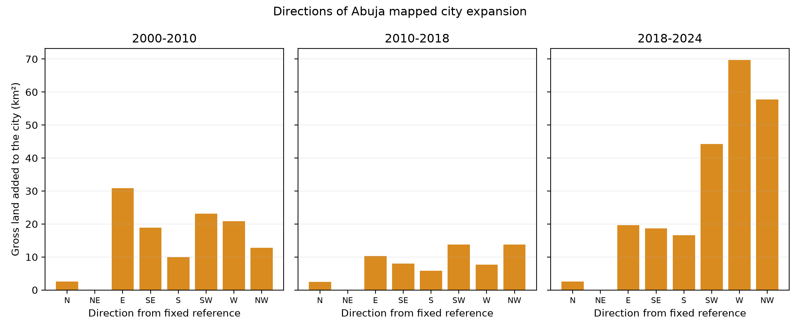

THE HEADLINE
+290.00 km²
(+292.69%) 99.08 → 389.08 km²
Growth was not steady: fast 2000–2010, a slight net dip 2010–2018,
then an explosion (+217.59 km², 14.63%/yr) in 2018–2024.
MAPPED EXTENT BY YEAR

99.08 → 175.47 → 171.48 → 389.08 km²
AREA & GROWTH RATE

Trajectory and annualized growth per interval
HOW GROWTH TYPE IS CLASSIFIED
Change rasters label each pixel:
Class 2 = gain NOT previously built-up (new)
Class 3 = gain PREVIOUSLY OUTLYING built-up
(detached settlement absorbed)
INFILL
New built-up filling gaps INSIDE the existing urban envelope.
EDGE EXPANSION
New built-up (Class 2) directly CONTIGUOUS with the existing edge; no jump.
LEAPFROG
Development detached from the city that then joined it (Class 3, "previously outlying"), and/or additions far from the reference (40 km+).
THE EVIDENCE, BY INTERVAL
| Interval | Gross added | Prev. outlying
(leapfrog signal) | Not prev.
built-up | Beyond
40 km |
|---|
| 2000–2010 | 119.21 | 32.06 (26.9%) | 87.15 | 0.00 |
| 2010–2018 | 61.78 | 0.00 (0%) | 61.78 | 0.00 |
| 2018–2024 | 229.19 | 39.40 (17.2%) | 189.79 | 8.56 |
Units: km². Class-3 share = leapfrog signal; beyond 40 km = distant leapfrog.
DIRECTION OF EXPANSION

Dominant sectors: SW (all 3 intervals), then W, NW, E
RESULT: 2000–2010
MIXED: Edge expansion + moderate leapfrog.
73% of additions (87.15 km²) new contiguous growth → edge expansion dominant
(E 25.9%, SW 19.4%). 27% (32.06 km²) previously outlying absorbed → clear
leapfrog component. Nothing beyond 40 km → no distant leapfrog.
RESULT: 2010–2018
EDGE EXPANSION (net consolidation).
0% previously outlying → no leapfrog. All 61.78 km² of gains were new edge-type
(NW 22.3%, SW 22.3%), but mapped loss (65.77 km²) exceeded gains → net −3.99 km².
Edge expansion offset by boundary churn / reclassification.
RESULT: 2018–2024
EDGE EXPANSION dominant, leapfrog emerging.
83% (189.79 km²) new built-up, overwhelmingly edge expansion toward W (30.4%)
and NW (25.2%). 17% (39.40 km²) previously outlying absorbed → continued leapfrog.
First additions beyond 40 km (8.56 km²) → early distant leapfrog.
BOTTOM LINE: Abuja's 2000–2024 growth is primarily
EDGE EXPANSION, with a persistent LEAPFROG component (outlying
settlements absorbed into the agglomeration) and the first signs of distant
leapfrog after 2018. Little classic INFILL is evident — most gain is new
land at the margins, not gap-filling inside the footprint.
Caveats (from source documentation):
The source Part 2 analysis measures extent/amount/location only and does NOT itself assign growth types — classification was handed to a later component (Project 3);
Class 3 reflects membership change, so a town joining the agglomeration can raise city area even if its built-up land predates the observation.
Directional/radial values are relative to a fixed reference point, not the contemporary edge.
Bright sand may read as built-up; informal settlements may be under-detected. Dates provisional; agreement checked only vs. modelled GHSL.
Source: Abuja physical urban footprints (Cailey Purswell, Oct 2026); Part 2 toolkit v1.0.0, EPSG:32632, 30 m.